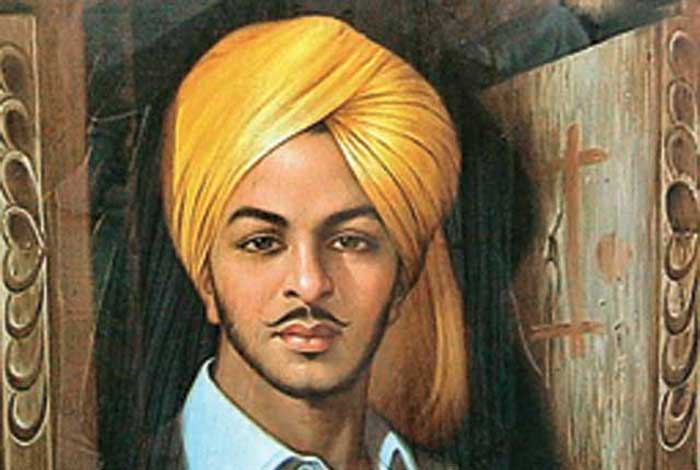

Bhagat Singh
"Revolution is an inalienable right of mankind.Freedom is an imperishable birth right of all!"

Bhagat Singh born on 27th September 1907 at Banga, Lyallpur District,Punjab Province, British India.
was a charismatic Indian revolutionary who participated in the mistaken murder of a junior British police officer in what was to be retaliation
for the death of an Indian nationalist.
He later took part in a largely symbolic bombing of the Central Legislative Assembly in Delhi and a hunger strike in jail, which—on the back of sympathetic
coverage in Indian-owned
newspapers—turned him into a household name in the Punjab region,
and after his execution at age 23 into a martyr and folk hero in Northern India.
Borrowing the ideas from Bolshevism and anarchism he electrified a growing millitancy in India in the 1930s and prompted urgent introspection within the Indian National Congress
nonviolent but eventually successful campaign for India's independence.
In December 1928 Bhagat Singh and an associate Shivaram Rajguru ,both members of a small revolutionary group, the Hindustan Socialist Republican Association,shot dead a 21 year old british police officer John Saunders, in Lahore Punjab,in what today is Pakistan.
Bhagat Singh's father and his uncle Ajith Singh were active in progressive politics, taking part in the agitation around the Canal Colonization Bill in 1907, and later the Ghadar Movement of 1914–1915.
was a prominent member of the Hindustan Republican Association (HRA)and was probably responsible, in large part, for its change of name to Socialist Republican Association (HSRA) in 1928.
Bhagat Singh had become the symbol of the new awakening among the youths.Nehru acknowledged that Bhagat Singh's popularity was leading to a new national awakening, saying: "He was a clean fighter who faced his enemy in the open field ...
he was like a spark that became a flame in a short time and spread from one end of the country to the other dispelling the prevailing darkness everywhere".
Four years after Singh's hanging, the Director of the Intelligence Bureau, Sir Horace Williamson, wrote: "His photograph was on sale in every city and township and for a time rivaled in popularity even that of Mr. Gandhi himself.
Bhagat Singh remains a significant figure in Indian iconography to the present day.His memory, however, defies categorisation and presents problems for various groups that might try to appropriate it.
The place where Singh was cremated, at Hussainiwala on the banks of the Sutlej river, became Pakistani territory during the partition. On 17 January 1961, it was transferred to India in exchange for 12 villages near the Sulemanki Headworks.
The youth of India still draw tremendous amount of inspiration from Singh.He was voted the "Greatest Indian" in a poll by the Indian magazine India Today in 2008, ahead of Bose and Gandhi.During the centenary of his birth,
a group of intellectuals set up an institution named Bhagat Singh Sansthan to commemorate him and his ideals.The Parliament of India paid tributes and observed silence as a mark of respect in memory of Singh on 23 March 2001 and 2005.
In Pakistan, after a long-standing demand by activists from the Bhagat Singh Memorial Foundation of Pakistan, the Shadman Chowk square in Lahore, where he was hanged, was renamed as Bhagat Singh Chowk. This change was successfully
challenged in a Pakistani court. 6 September 2015 , the Bhagat Singh Memorial Foundation filed a petition in the Lahore high court and again demanded the renaming of the Chowk to Bhagat Singh Chowk.